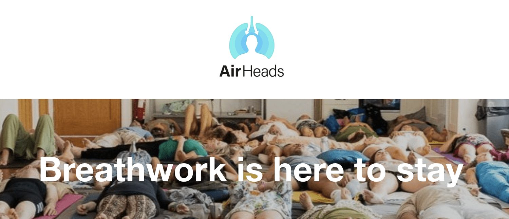

In this week's YouTube video I tackle the top questions that have been submitted to the r/becomingtheiceman subreddit over the last month. This includes-
Do cold showers help with anxiety?
What can you do between rounds of WHM breathing?
How do you prevent hypothermia?
Is it normal to feel tired after an ice bath?
What is the difference between inhale-holds and exhale-holds?
Can the WHM cause shingles or tinnitus?
Come watch the explainer and if you have any other questions for me, drop them in the comments. I can do these all day.

I'm also excited to announce that I'll be speaking at an amazing (online) breathwork conference along with the likes of Patrick McKeown, James Nestor, Jesse Coomer, Tom Granger and Mike Maher on April 28th at 12:00 MT at the AirHeads master class. I think it's going to be a pretty awesome event and worth the $98 ticket price. Registration is open! So signs up and let's get down to the business of breathing.